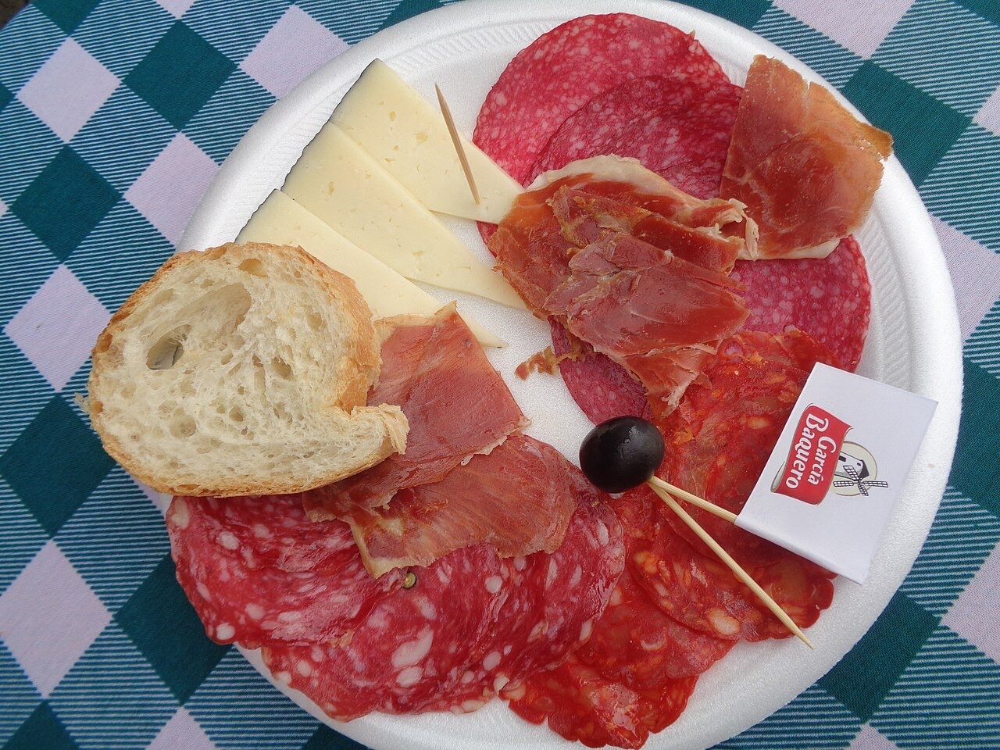

Fotografias ilustrativas — no site final usamos as vossas.
Peça da mesa por QR code, sem esperar pela equipa.
Organiza festas e eventos com música ao vivo.
Carnes grelhadas e prato do dia.
A Tasca da Eira é um restaurante tradicional na Costa, perto do Santuário da Penha. Carnes grelhadas, doses generosas e festas com música ao vivo.

Fotografias ilustrativas — no site final usamos as vossas.
Novo · Pedidos por QR code
Menos espera nas horas de ponta, menos enganos nos pedidos e a equipa livre para servir.
Pedido de reserva
Escolha o dia e a hora — o pedido chega por WhatsApp e confirmamos logo.
↑ Assim chegaria a mensagem ao vosso WhatsApp. (Nesta demonstração nada é enviado.)
Onde estamos
Proposta para Tasca da Eira
Esta página foi feita de propósito para Tasca da Eira por João Machado, programador web aqui de Guimarães. Inclui:
Eu trato do alojamento e da manutenção. Sem compromisso.